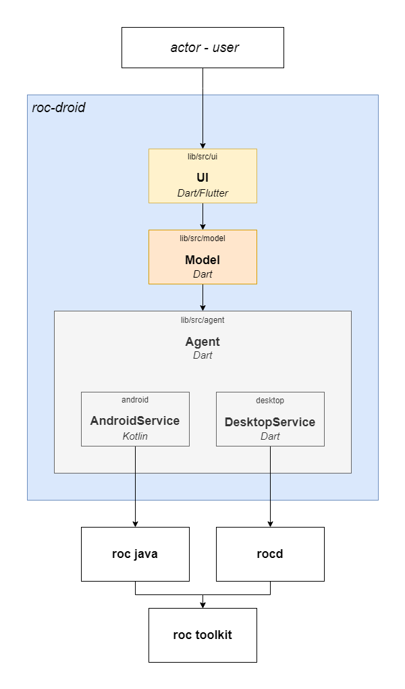

Overview

roc-droid is responsible for implementing and managing the functionality of the roc-toolkit logic in the form of an application.
The roc-droid implementation is comprised of three modules:
-
UI – (
lib/src/ui): This module is responsible for rendering the user interface and handling user interactions with the application functionality. -
Model – (
lib/src/model): This module contains all the primary classes and entities necessary for updating the visual display of the graphical interface. -
Agent – (
lib/src/agent): This module manages client interaction with the core logic of the roc-toolkit.